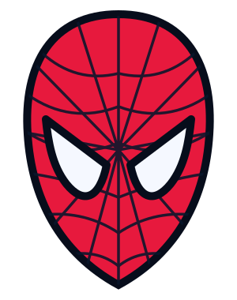

Английский голос устройства. Можно просто читать.
Hi! I need your help.
I have a blue backpack. My map is in it.
Keks can see my backpack. It is at the park. It is under a bench. There are two trees next to the bench.
Can you find it? Thanks!
SPIDER-MAN × YOU / THE MISSING BACKPACK
Рюкзак Spider-Man пропал. Внутри — секретная карта. Поймай 4 сигнала, найди рюкзак и выйди на связь с героем.
Авторская учебная история. Знать сюжет фильмов не нужно.

Начни со слов ниже, затем поймай первый сигнал в видео.
Основной маршрут: 2 + 2 + 3 + 2 + 2 + 4 = 15 минут. Бонусы и трейлер — после миссии.
00 / GEAR UP · 2 МИН
Нажми на 4 цели, открой перевод и произнеси слова. Они помогут найти рюкзак. Пары ниже — бонус.
WEB TARGETS / 0 из 4 целей
Кнопка «Слушать» использует английский голос устройства. Если голос недоступен, читай слова вместе с учителем.
Выбери английское слово и его перевод.
01 / WATCH THE BRIEFING · 2 МИН
Посмотри 30-секундный брифинг. Ответь на два вопроса — получишь первую цифру.
Авторский видео-брифинг • английские титры • без озвучки
Hi! I need your help.
My backpack is blue. My map is in my backpack.
Keks is my helper. He has green eyes.
Find my backpack. Get four numbers.
Open the box. Tell me where the backpack is.
Официальный трейлер Spider-Man: Homecoming, Sony Pictures. Речь быстрая — для A1 достаточно смотреть и замечать детали.
Открыть видео отдельно ↗What color is his suit? Has he got a mask? Would you like to be Spider-Man?
YouTube требует интернет и может быть недоступен в вашем регионе. Основная миссия работает без него.
02 / READ THE MESSAGE · 3 МИН
Прочитай короткое сообщение. Отметь True или False в двух утверждениях.
03 / RADIO CHECK · 2 МИН
Проверь связь: выбери ответ на вопрос Spider-Man и произнеси его вслух.
I can help.
Can you help me? Yes, I can. / No, I can’t.
can help — могу помочь. После can — глагол без to.
Can you help me? — Ты можешь мне помочь?
Выбери ответы про себя. Произнеси две фразы и задай вопрос учителю.
I can ____. I can't ____. Can you ____?
04 / FIND THE BACKPACK · 2 МИН
Выбери точку на карте. Проверь три улики: цвет рюкзака, скамейку и число деревьев. Затем отправь координаты.
Check the color.
Check the place.
Check the trees.
05 / FINAL CALL · 4 МИН
Все сигналы собраны? Введи 4 цифры в порядке 01 → 04. Откроется канал связи со Spider-Man.
YOUR RADIO CALL / 45 SECONDS
Ты — помощник. Учитель — Spider-Man. Подготовь 3–4 короткие реплики и разыграй диалог один раз. Смена ролей — бонус после миссии.
Spider-Man: Hi! Can you help me?
You: Yes, I can. I can see your backpack.
Spider-Man: What color is it?
You: It is ____.
Spider-Man: Where is it?
You: It is at the ____. It is ____ a bench.
Spider-Man: Great! Thank you!
You: You're welcome!
00:45
Таймер помогает говорить; ответ автоматически не оценивается.
Представь, что рюкзак теперь красный и лежит на скамейке у школы. Измени ответ. Спрячь свой настоящий рюкзак в комнате: пусть учитель найдёт его по твоим подсказкам.
It is red. It is on a bench at the school.
Real room: It is under the desk. / It is next to the chair.
Ты посмотрел видео, прочитал сообщение, нашёл рюкзак и использовал английский в разговоре.